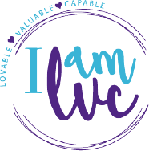
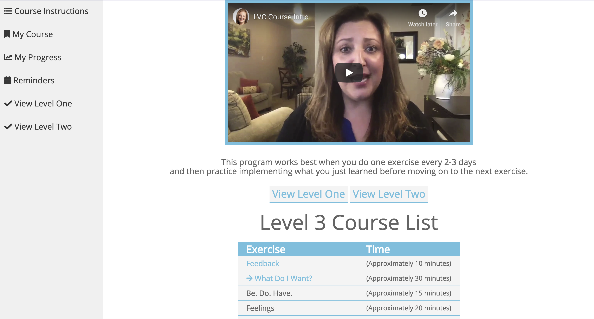
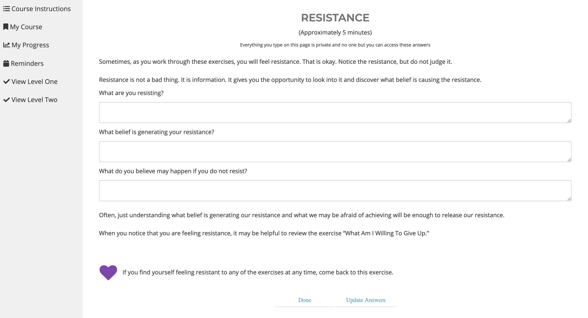
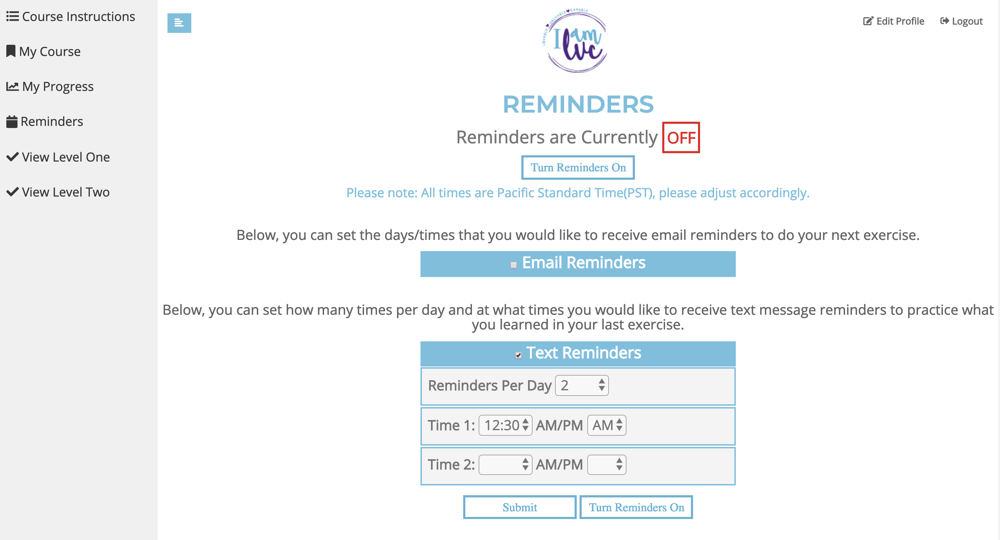
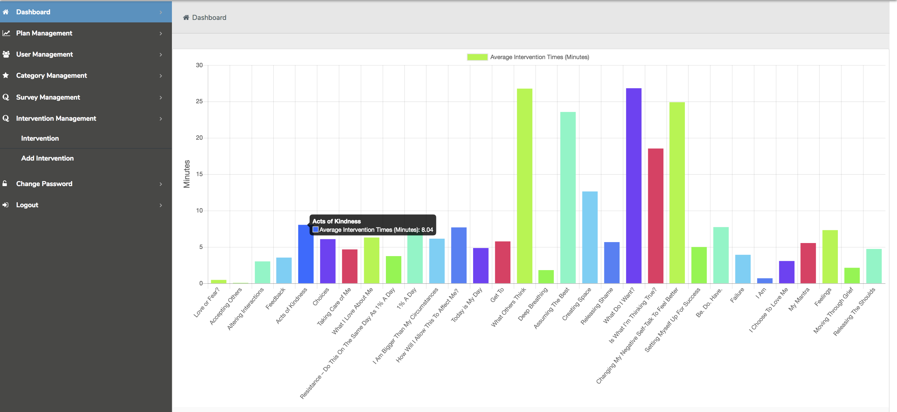

<div class="background">
	<div class="projectContainer">
		
		<h2 class="projectTitle">IAmLVC Online Course</h2>
		<div class="techIcons">
			
			
			
			
			
		</div>
		<h3 class="date">May 2018 - Present</h3>
		<div class="description">
			<div class="text">
				<h3 class="reflectionTopic">About</h3>
				<p>This project is one I am currently working on as a freelance fullstack web developer. It is an online course for a psychology firm that allows users to learn strategies for improving mental health in the workplace.</p>
				<h3 class="reflectionTopic">Responsibilities</h3>
				<ul class="rList">
					<li>Redesigining existing features and designing new features with Angular on frontend application</li>
					<li>Maintaining and updating REST API and server hosted on AWS</li>
					<li>E2e testing</li>
				</ul>
				<h3 class="reflectionTopic">Note</h3>
				<p>The live web application can be found <a href="www.iamlvc.org">here</a>. Please contact me if you would like a demo on how the course works or to view the code.</p>
			</div>
		</div>
		<div class="features gray">
			<h1 class="header">What I've Done</h1>
			<div class="feature gray">
				
				<div class="featureDesc rightText">
					<i class="fas fa-home"></i>
					<p>Designed a simple main course page and central hub emphasizing ease of use</p>
				</div>
			</div>
			<div class="feature">
				<div class="featureDesc leftText">
					<i class="fas fa-pencil-alt"></i>
					<p>Created features that allow user to save current progress, review previous answers, etc. (example course page shown)</p>
				</div>
				
			</div>
			<div class="feature gray">
				
				<div class="featureDesc rightText">
					<i class="fas fa-bell"></i>
					<p>Implemented text and email notifications to remind user to continue their course or remember what they've learned</p>
				</div>
			</div>
			<div class="feature">
				<div class="featureDesc leftText">
					<i class="far fa-chart-bar"></i>
					<p>Built admin site for owner to track user activity and other metrics</p>
				</div>
				
			</div>
		</div>
		<div class="reflection">
			<h1 class="header">What I've Learned</h1>
			<div class="description">
				<div class="text margBot">
					<h3 class="reflectionTopic">Web Application Structure</h3>
					<p>This project taught me about how web applications communicate and transfer data under the hood. I learned how to implement a REST API and make the server and frontend application accessible online. It is hosted with AWS which exposed me to the wide array of products they have for cloud computing.</p>
					<h3 class="reflectionTopic">MEAN Stack</h3>
					<p>This was my first exposure to the MEAN stack and I learned a lot by diving in through trial and error. I have started a number of projects with this stack since then and it has really elevated me as a developer.</p>
					<h3 class="reflectionTopic">Communication</h3>
					<p>My client is not familiar with the technical aspects of web development. I had to learn how to understand what she wanted me to do, come up with a solution and then explain the solution in a non-technical way.</p>
				</div>
			</div>
		</div>
	</div>
</div>
